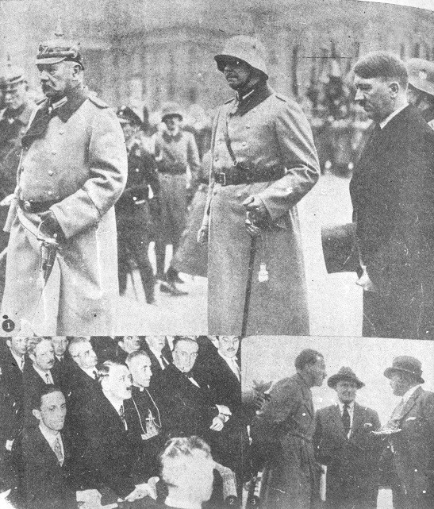
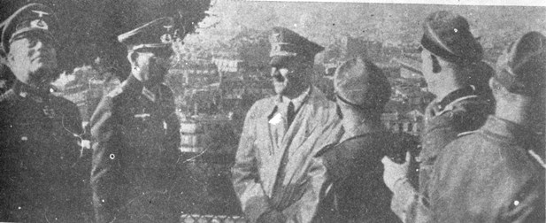
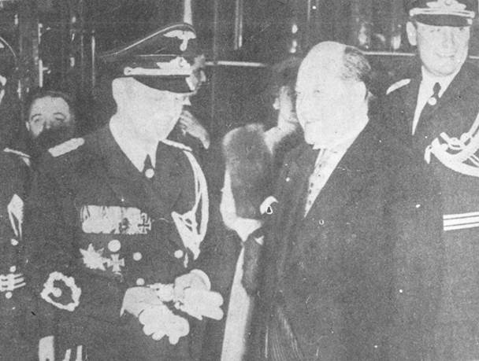

Tác giả dừng lại ở đoạn vừa ra khỏi hầm trú ẩn Dinh Tể Tướng. Ông không làm sao mang thông điệp cuối cùng của Hitler đi được. Hai ngày sau, dầu cho Hồng-quân không tiến chiếm được dinh ấy, thì cũng không có một đội quân nào còn đủ sức để cứu viện cho Adolf Hitler cả. Vậy, chắc độc giả cũng muốn biết ba vị sĩ quan trẻ này làm thế nào để vượt vòng vây Sô-Viết, rồi thoát khỏi Bá- linh và làm sao tác giả gặp được gia đình. Chúng ta hãy đọc tiếp:
Chúng tôi nép mình bên đống gạch vụn của căn nhà nhỏ nằm ngay trước miệng hầm trú ẩn để chờ cho dứt những loạt đạn pháo kích. Từng tràng đạn liên thanh không biết từ đâu bắn ra, nổ vang rền chào đón chúng tôi và lọt tuốt vào Dinh Tể Tướng đang đổ nát. Từ công trường Potsdamer, những bựng khói đen dầy kịt bốc cao lên. Chúng tôi chạy nhanh dọc theo con đường Hermann Goering vượt qua không biết bao nhiêu hố bom, bao nhiêu chiếc xe hơi hư nát và bao nhiêu thây người chết, rồi mới vào được vườn bách thú. Cường độ oanh tạc ở đây nhẹ hơn. Bỗng chúng tôi nhận thấy sáu, tám, rồi mười chiếc oanh tạc cơ Nga đang chĩa thẳng xuống chúng tôi. Chúng tôi phóng nhanh vào một mái hiên nhà gần đó. Bên ngoài, lớp bom rơi, lớp súng đại bác nổ ầm ầm. Trong hành lang một số người đang nằm, ngồi lổm nhổm. Trông họ thật là tang thương: những người đàn bà thiểu não tuyệt vọng, trẻ con, kinh sợ điếng hồn ; còn mấy người lính chán chường rủn chí. Trong một góc nhỏ, có tiếng người bị thương rên rỉ. Riêng chúng tôi, vẫn phải tiếp tục cuộc hành trình. Bên bờ một cái hố bom, tám thây người thường dân nằm ngổn ngang: kẻ bay đầu, người cụt chân tay, trông thật khủng khiếp. Ở phía trước, mùi hôi thúi xông lên nồng nặc, nào xác ngựa chết, nào xe cộ bị bắn phá tan tành, nào nhà cửa bốc cháy phừng phừng. Chúng tôi phải trèo lên những đống gạch đổ nát để đi, nên cứ té lên té xuống liên miên. Cứ thế, chúng tôi lần bước về phía Tây. Trong mấy ngôi vườn chúng tôi còn thấy hơn mười lăm khẩu đại bác Đức. Chúng đã im hơi bặt tiếng trong bao nhiêu ngày rồi vì không còn một viên đạn. Trải qua bốn tiếng đồng hồ dài dằng dặc, gần sáu giờ chiều chúng tôi mới vào được hầm trú ẩn của sở thú để nghỉ mệt độ nửa giờ. Trong hầm cũng cảnh tương cũ lại diễn ra: nhiều người chen chúc nhau và người nào người nấy đều kinh hồn tuyệt vọng. Khi chúng tôi chạy tới công trường Adolf Hitler, trời đã tối hẳn. Từ hồi xế trưa, mấy chiếc thiết giáp đầu tiên của Nga đã xuất hiện ở đó.

.Ảnh 14: Trên đường tiến đến uy quyền, Hitler tiến tới như một con chó sói, khi thì nhu mì, hiền dịu, khi thì hung dữ, bạo tàn, (1 Cung kính trước vị Thống chế già Hindenburg. (2 Hòa hoãn và lễ độ với Giáo hội, (3 Với Goering và Rohm (Rohm - Chỉ huy trưởng lực lượng SA, lực lượng bán quân sự ruột của Hitler...Nhưng về sau Hitler cho lịnh giết Rohm trong đêm „La nuit des longs couteaux ".
Khi tới đài chỉ huy của toán thanh niên Hitler, một chú trẻ tuổi trong bọn tình nguyện đưa chúng tôi đến vận động trường Đức quốc bằng ô tô. Mở hết tốc độ và với sự can đảm phi thường, chú đã đưa chúng tôi qua được phía tây thành phố Charlottenburg. Sau khi chia tay với chú độ nửa giờ, những bước chân của chúng tôi đã âm vang trên mặt sân mênh mông của vận động trường thể thao. Ở đây thật là vắng vẻ, không một bóng người qua lại. Ánh trăng êm như dòng sữa đang soi rọi khắp cảnh vật, tạo nên một vẻ đẹp lạ lùng. Chúng tôi nghỉ đêm với một toán Thanh niên Hitler đang chiến đấu ở đó. Vừa rạng sáng là chúng tôi vội lên đường. Chúng tôi phải cố gắng đi đến chiếc cầu bắc ngang sông Havel ở Pichelsdorf. Tại cầu có một toán lính Đức đang chiếm đóng, họ đón chúng tôi và đề nghị chúng tôi ở lại chiến đấu, nếu có đụng trận. Chúng tôi cũng gặp cả Thiếu tá von Below ở đây, tuy ông rời Dinh Tể Tướng sau chúng tôi đến mấy giờ đồng hồ.
Trước cầu Pichelsdorf là con đường Heerstrasse. Hai bên đường đều có đào những chiến hào khá sâu và mỗi bên đều có một hay hai Thanh niên Hitler phòng thủ với những chiếc lưỡi lê. Trời đã sáng tỏ nên chúng tôi thấy rõ bóng dáng mấy chiếc thiết giáp to lớn của Nga đang bố trí gần nhà ga Heerstrasse. Trên xe, những khẩu đại bác đều hướng về phía chiếc cầu. Hai lần nhấp nhứ, đến lần thứ ba chúng tôi mới vượt qua được đoạn cầu dài và hẹp dành riêng cho bộ hành. Chúng tôi chỉ xiết vui mừng khi qua được bên kia cầu và núp mình sau bờ dốc cao. Chúng tôi lùng kiếm trong cánh rừng dọc theo con lộ suốt mấy tiếng đồng hồ mới gặp được vị chỉ huy của toán lính đang phòng thủ địa điểm này. Ông đang đào một cái hầm núp trong đống đất dùng để đắp mặt đường và dùng cây để chống đỡ nóc hầm. Sau khi nhận ra nhau, ông kể cho tôi nghe những gì đã xảy ra ở đơn vị ông: "Cách đây năm ngày, khi mới bắt đầu giao tranh, tôi còn chỉ huy độ năm ngàn thanh niên Hítler và một số lính. Chúng tôi chiến đấu trong những điều kiện thiếu thốn mọi bề trong lúc lực lưọng địch quân thật là hùng hậu và được yểm trợ tối đa. Đám thanh niên trẻ tuổi của tôi chỉ được võ trang bằng súng cá nhân và lưỡi lê nên phải chịu tổn thất khủng khiếp dưới hỏa lực của pháo binh địch. Chỉ còn sống sót lại độ năm trăm người mà thôi. Không có toán quân trừ bị nào tiếp viện, cũng không có một đơn vị nào thay phiên, nên mặc dầu đã mòn hơi kiệt sức, người của tôi cũng không được một phút chợp mắt nghĩ ngơi". Chúng tôi ra khỏi rừng, viên sĩ quan vốn là Obergebietsfuhrer Schlunder (ngươi giữ một vị trí yết hầu, tiếp lời với một giọng đắng cay: "Điều đau khổ nhứt đối với những người trẻ tuổi ở đây, là đêm đêm họ phải nghe tiếng gào thét tuyệt vọng của những người đàn bà, những thiếu nữ bị địch bắt".
Thật là một trọng tội khi đặt những vũ khí giết người vào tay bọn trẻ này và đẩy chúng ra trước kẻ địch thập phần tinh nhuệ, thế nghĩa là đưa chúng tới
cái chết hiển nhiên.
Ngày 01 tháng 05, vào lúc quả nửa đêm, chúng tôi lên một chiếc ca nô đậu ở mũi đất của một hòn đảo nằm giữa hai nhánh sông Havel và Pichelsdorf Chúng tôi định tới Wannsee là một địa điểm nằm phía bên kia phòng tuyến Nga. Ở đỏ chắc hãy còn một toán quân chiến đấu Đức đang chống giữ. Tôi ngồi trước mũi thuyền với khẩu tiểu liên trên tay sẵn sàng nhả đạn, phía sau tôi Weiss và Bernd đang ra sức chèo nhanh. Lúc đầu thì chúng tôi bơi thuyền giữa dòng sông, nhưng khi đến ngang đền vua Wilhelm thì chúng tôi chợt thấy một hàng thuyền Nga. Chúng tôi vội vàng chèo sát vào bờ phía tây, len lỏi dưới những tàng cây rậm rạp để ra ngoài sông. Đêm lạnh buốt và trời đầy sao. Đến gần Kladow thì chúng tôi bơi sát bờ đến nỗi nghe rõ mồn một tiếng nói chuyện của bọn lính Nga, tiếng máy xe rồ và nhưng tiếng động tương tự khác. Chúng tôi vượt qua cù lao Sclnvanenwerder vào lúc 2 giờ 45 khuya. Trong mấy biệt thự đèn đuốc còn sáng choang. Những giọng cười điệu hát còn váng dội đến tận tai chủng tôi. Khi trở ra khỏi đảo, thuyền chúng tôi gặp phải cơn gió mạnh từ phía Wannsee thổi tới. Thuyền quá khẳm nên suýt bị vô nước và chìm lỉm. Khi những tia sáng đầu tiên vừa ló dạng ở phương Đông, chúng tôi cập bờ, bên bán đảo Wannsee, gần nơi đóng quàn của Sư đoàn thứ 20 tinh binh. Vừa trèo lên, chúng tôi chợt lạnh xương sống khi thấy mấy khẩu đại bác chống chiến xa đang chĩa về phía xuồng chúng tôi. Hú hồn, đây là lính Đức!

.Ảnh 15: Sau khi Pháp bại trận. Hitler thăm viếng Ba-lê cùng Bộ tham mưu đang đứng trên sân thượng Thánh đường Sacres Coeur......
Toán chiến đấu ở đây đang chuẩn bị rút lui vào đêm mùng một rạng sáng mồng hai tháng năm. Họ định bỏ vị trí này để trở về với đám tàn binh của Binh đoàn Wenck ở phía Nam Potsdam. Thấy chúng tôi họ mừng rỡ vô cùng và đón tiếp thật là nồng nhiệt. Ba vị sĩ quan Johannmeier, Zander và Lorenz đã rời khỏi hầm núp ở Dinh Tể Tướng trước chúng tôi. Họ đã định dùng ca-nô để đi ngang Gatow, sau đó sẽ rẽ về hướng Tây. Chúng tôi định sẽ gặp nhau ở sư đoàn.
Chúng tôi cũng biết trước việc chọc thủng phòng tuyến địch hiển nhiên sẽ rước lấy thất bại. Quân Đức chạm phải một hàng rào chiến xa đang bố trí trước chiếc cầu bắt ngang con kinh Petit Wannsee. Hàng trăm người, lớp chết, lớp bị thương, đã ngã gục trên chiếc cầu bị phá hủy hết phân nửa này. Chỉ có vài người vượt qua khỏi cầu và thành lập một vị trí chiến đấu ở đầu cầu. Nhưng ngay đêm đó, quân Nga liền mở cuộc phản công và trận chiến kết thúc bằng một cuộc tàn sát khủng khiếp. Bên của chúng tôi không còn được mấy người thoát chết. Weiss đã bị bắt. Khi đã hoàn toàn thảm bại, Bernd và tôi liền trốn vào rừng thông rậm rạp. Sáng ngày 02 tháng 05, chúng tôi cởi bỏ bộ quân phục, và kiếm hai bộ đồ thường dân cũ mèm, rách tả tơi mặc vào. Chúng tôi phải dùng tay để đào hố ẩn núp và chúng tôi trốn tránh cho tới đêm hôm sau. Suốt ngày, quân Nga đã lục soát khắp các khu rừng, nhưng họ vẫn không thấy chúng tôi.
Đến ngày 03 tháng 05, chúng tôi hay tin mặt trận Bá-linh đã kết thúc và Hitler cũng không còn. Thế là bây giờ chúng tôi được giải thoát khỏi cái sứ mạng mà từ lúc đầu, chúng tôi đã thấy là hoài công vô ích. Chúng tôi liền lên đường, hướng về phía Tây Nam. Mục tiêu trước tiên của chúng tôi là vượt qua sông Elbe để đến thành phố Wittenberg. Chúng tôi định đi ngang qua Teltow và trại huấn luyện quân sự cũ ở Juterbog vì cho rằng người Nga chắc phải chọn những vị trí quan trọng để đóng quân chứ đâu có lựa chi khu trại hoang phế nầy. Nhìn thấy những toán công nhân ngoại quốc đang lũ lượt kéo đi trên các đường phổ, chúng tôi có ý định giả ra làm những người thợ Pháp ở Luxembourg. chúng tôi cũng nói tiếng Pháp khá sõi để đóng vai trò nầy.
Mặt trời đã lên khá cao và chúng tôi cũng đã đi qua một ngôi làng bỏ hoang gần Juterbog một cách dễ dàng. Thình lình một chiếc cam nhông Nga, từ một khúc quanh, đỗ ra và đậu ngay trước mặt chúng tôi. Trong nháy mắt, mười hai tên lính và một người đội trưởng nhảy xuống vây quanh chúng tôi với mấy khẩu tiểu liên trên tay lăm le đe dọa. Họ cho chúng tôi là ính Đức. Chúng tôi phải làm ra vẻ phẫn nộ, vừa nói vừa khua tay múa chân ra dẫu để cải chính là mình không có liên hệ gì với những tên "germanski" cả. Nhưng chúng tôi không thuyết phục cho họ tin được vì sau một lúc do dự, họ quyết định lục soát cẩn thận hai thường dân Pháp nầy. Họ khám phá ra nào là đồng hồ quân đội, nào là nhẫn, nào là địa bàn, nào là sô cô la, nào là diêm quẹt và tai hại hơn nữa là có cả mấy tấm địa đồ của Bộ Tổng tham mưu. Những chứng cớ đã rành rành, viên đội trưởng vừa quơ quơ mấy tấm địa đồ và địa bàn lên, vừa hét vào mặt chúng tôi: "Lính Đức!". ông ta ra lịnh cho chúng tôi phải ngồi xuống tức khắc. Chúng tôi tưởng họ sẽ khảo tra hành hạ chúng tôi dữ lắm, nhưng họ không làm gì chúng tôi cả. Viên đội trưởng lại còn bảo chúng tôi mang giày vô trở lại, Nhưng vừa mang vô xong thì một tên lính lại bảo lột ra, còn mấy tên lính khác thì tranh giành nhau chí choé những chiến lợi phẩm. Cuộc giành giựt lan tràn nhanh chóng, và may mắn cho chúng tôi, viên đội trưởng cũng tham dự nốt. Dường như họ quên bẵng chúng tôi đi. Một người lính Nga lớn tuổi, nét mặt vui vẻ và khả ái, tiến về phía chúng tôi và ra dấu bảo chúng tôi trốn đi. Chúng tôi liền phóng mình chạy nhanh hết tốc lực và biến dạng sau khúc quanh đầu tiên, mặc dầu chân không giày chỉ còn dinh lại có đôi vớ mà thôi.
Hôm sau, chúng tôi đến eo đất ở gần Trebbin và ngủ một đêm trong căn chòi của thợ săn. Khoảng một giờ khuya bỗng có tiếng động làm chúng tôi giựt mình tỉnh dậy. Ánh đèn sáng chói làm lóa mắt chúng tôi, tuy vậy chúng tôi cũng nhận thấy khá rõ là mấy khẩu súng đang chĩa vào chúng tôi. Lại cũng bọn Nga đi tuần tiễu nữa. Nhưng lần nầy, tin chắc rằng không còn món đồ ác ôn nào để tố cáo mình nữa, chúng tôi đã đóng vai trò những người thợ Pháp một cách hoàn hảo đến nỗi bọn Nga tin ngay, họ chỉ hỏi vài câu qua loa rồi bỏ đi.
Trưa hôm ấy, chúng tôi lại chạm trán một cuộc gặp gỡ lạ lùng. Bernd và tôi đang chống tay lên thành lan can của con đường nhỏ dành cho người đi bộ trên xa lộ. Hai đứa trao đổi ý kiến của mình là những người cựu chiến binh, và bàn về những đoàn lính Nga đang diễn hành trước mặt. Họ sắp hàng đôi và đi về hướng Tây, đoàn quân kéo dài tưởng như không bao giờ dứt. Chúng tôi mải mê nói chuyện nên không nghe tiếng xe cam nhông vừa đậu lại đàng sau chúng tôi. Một sĩ quan Nga đứng trên xe, với tay vỗ nhẹ vai tôi và hỏi thăm đường. Anh ta nói tiếng Đửc không rành. Còn tôi, tôi chỉ đường cho anh ta bằng cái thứ tiếng Đức còn tệ hơn nữa, tôi bỏ dấu như giọng người Pháp. Chiếc xe lại rồ máy chạy, chúng tôi thở ra nhẹ nhõm. Nhưng mà, chúng tôi bỗng kinh ngạc nhận thấy: phía sau xe, ngồi xen lẫn giữa mươi người tù binh Đức là Trung tá Weiss. chúng tôi đã mất hẳn liên lạc với anh từ khi thất thủ ở đầu cầu gần Wannsee.

.Ảnh 16: G. Kiosseivanoff - Thủ Tướng Bảo-Gia-Lợi được von Ribbentrop tiếp đón nồng hậu ngày 5 tháng 7-1939.
.....................
Ngày sau đó, khi đến trụ cây số có ghi "Wittenberg: 18 cây số", chúng tôi rẽ qua một con đường và lọt ngay vào một trạm kiểm soát của người Đức mà chúng tôi đã vô ý không nhìn thấy. Lần nầy thì chúng tôi, hai người thợ Pháp, bị đưa đi nhập bọn với sáu, bảy mươi người Pháp, Hòa Lan và Bỉ. Họ chở chúng tôi đến một trại tạm trú của công nhân ngoại quốc được thiết lập cách đó tám cây số. Định mệnh thật là trớ trêu vì người nào khai mình là ngưòi Đức thì lại được trả tự do. Còn chúng tôi thì phải ở lại trại và sắp có những chiếc cam-nhông Mỹ đến chở chúng về phía Tây. Chúng tồi thích đi đường sông hơn, vì nếu không có gì trở ngại, thì chỉ hai mươi bốn giờ sau là tới Wittenberg. Trong mấy ngày kế tiếp, ngày nào chúng tôi cũng ém vượt qua sông Elbe, nhưng không thành công. Người ta đã bắt đầu quấy rầy tôi và tôi cảm thấy không còn chút nghị lực tôi hoàn toàn suy nhược rồi. Một buổi chiều kia, tình cờ chúng tôi được đưa đến một căn trại của Nga, gồm có những mái nhà lụp xụp, gần Oranienburg. Ở đó, chúng tôi vẫn còn là những người khách bất đắc dĩ của người Nga và chúng tôi vẫn không từ bỏ ý định vượt qua sông. Lần nầy chúng tôi sắp thành công, nhưng vì nước chảy siết quá mà tôi lại yếu sức. Nhưng sau rốt, trưa ngày 11 thảng 5, chúng tôi cũng đã lội được qua bên kia sông, về phía Bắc Raguhn. Lên đến bờ, hoàn toàn kiệt sức, chúng tôi buông mình rơi xuống thảm có xanh rì. Chúng tôi qua được khu vực của Mỹ rồi!
Năm giờ sáng hôm sau, Bernd và tôi chia tay nhau mà lòng nặng trĩu u buồn. Anh ấy xuôi về Nam, theo hướng thành phố Leipzig ; còn tôi thì đi ngược lên phía Bắc, để đến hải cảng Lubeck. chúng tôi đã trở thành bạn thiết của nhau suốt trong mấy tuần lễ dài đầy biến cố. Chúng tôi vừa lật qua một trang sách không thể nào quên mặc dầu chứa đựng nhiều khủng khiếp của cuộc đời chúng tôi.
Tôi vẫn còn tiếp tục độc hành trong suốt một tuần lễ tròn và vượt qua nhiều giai đoạn phiêu lưu, để sau cùng bình yên gặp lại vợ con tôi ngày 19 tháng 5 năm 1945.